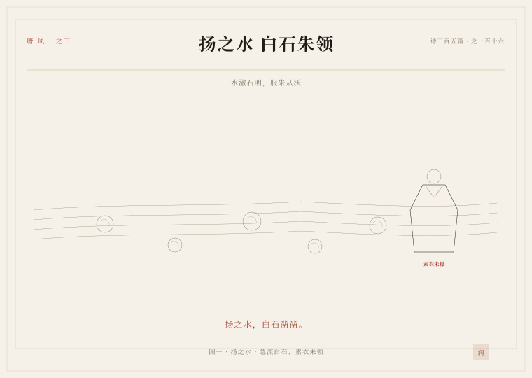
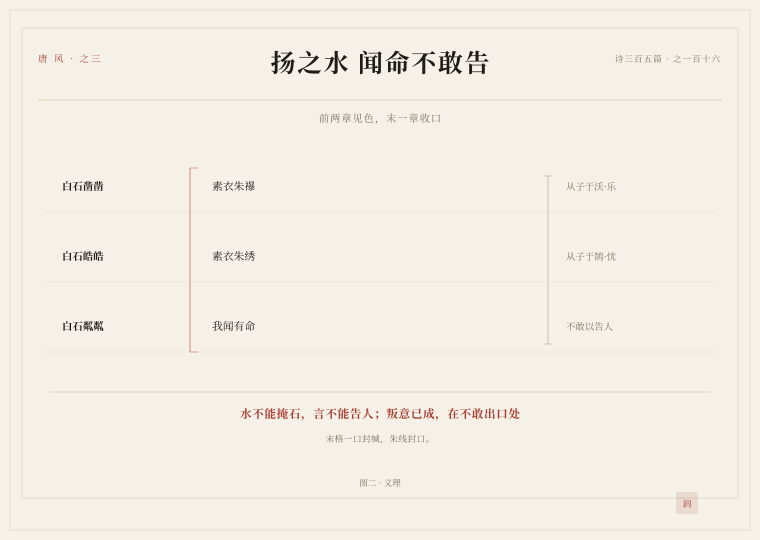

第一百十六篇 扬之水
唐风 · 之三 SJ116
朗读 · 普通话
依经文原文朗读，章次不读出；配古琴底乐，不改速、不加拖腔。全库同一音色（豆包 TTS），非播音员录制。
一 解题
诗三判：
- 谁在说：晋之国人。见沃盛强，衣素衣朱领而从君子于沃、于鹄；末章闻有密命，不敢告人。
- 说什么事：一二章换凿凿/皓皓、襮/绣、沃/鹄、乐/忧；三章独留水、石、命、人。前两章写相从之喜，末一章写知情之隐。
- 为何编在此：115 刺有国不能守，116
写民将叛而归沃。前篇主人不知，此篇国人已动；唐风由戒而刺，而入于乱。
《毛序》：“《扬之水》，刺晋昭公也。昭公分国以封沃，沃盛强，昭公微弱，国人将叛而归沃焉。”
朱子《诗集传》：“比也。凿凿，巉岩貌。襮，领也。诸侯之服绣黼领而丹朱纯也。子，指桓叔也。沃，曲沃也。晋昭侯封其叔父成师于曲沃，是为桓叔；其后沃盛强而晋微弱，国人将叛而归之，故作此诗。言水缓弱而石巉岩，以比晋衰而沃盛，故欲以诸侯之服从桓叔于曲沃，且自喜其见君子而无不乐也。”
本库的看法：《扬之水》是一首把“叛”写成“不敢言”的诗。
扬水激疾，白石凿凿皓皓粼粼；水弱石强，是晋衰沃盛之比。素衣朱襮，是从沃之服；既见君子，是归沃之心。
末章“我闻有命，不敢以告人”，知情而隐，隐即是从。断语：水不能掩石，言不能告人；叛意已成，在不敢出口处。
先辨五事：“襮”是衣领，不是“袖口”；“沃”是曲沃邑，不是“肥沃”；“鹄”是曲沃旁邑，不是“天鹅”；“命”是密命／善政之命，不是“命令”；“扬之水”是激扬之水，与王风《扬之水》同名异诗。
二 经文
第一章
扬之水，白石凿凿。
素衣朱襮，从子于沃。
既见君子，云何不乐？
第二章
扬之水，白石皓皓。
素衣朱绣，从子于鹄。
既见君子，云何其忧？
第三章
扬之水，白石粼粼。
我闻有命，不敢以告人。
分章：三章，一、二章章六句，三章四句。
三 韵读
- 一章：凿、襮、沃、乐，药部；沃、乐药部入声，与凿、襮相押。
- 二章：皓、绣、鹄、忧，宵幽合韵；皓宵部，绣、忧幽部，鹄觉部，旁转通押。
- 三章：粼、人，真部；命耕部，不入韵，一说真耕旁韵；末章四句二韵，与前两章六句体例不同。
读法：一二章皆水—石—服—从—见—问，六句成偶；三章忽缩为四句，去服与从，独留命与不敢告，诗势一收，隐意即出。
四 字义与名物
- 扬之水：激扬之水，激流湍疾。凿凿：毛传“鲜明貌”，朱传“巉岩貌”；本库从石在急流中鲜明见石之貌。
- 素衣：中衣以素。朱襮：襮，领也；诸侯之服，绣黼为领、丹朱为纯。沃：曲沃，晋邑。
- 皓皓：洁白貌。朱绣：朱绣即朱襮；毛传“绣，黼也”，郑笺破“绣”为“绡”，缯名。鹄：曲沃旁邑。
- 粼粼：清彻，水清石见之貌。命：毛传“闻曲沃有善政命”；一说倾晋之密命。不敢以告人：郑笺“不敢以告人而去者，畏昭公，谓己动民心”。
五 今译
激扬的流水，白石凿凿鲜明。素衣朱领，跟从您到曲沃。既已见到君子，怎么会不快乐？
激扬的流水，白石皓皓洁白。素衣朱绣，跟从您到鹄邑。既已见到君子，还有什么可忧？
激扬的流水，白石粼粼清彻。我听到有密命，不敢告诉旁人。
六 章旨
- 一章：写“沃”。水激石明，服朱从沃；见君子而乐，归心已动。
- 二章：写“鹄”。石色转白，从者转远；何忧之有，忧已不在己。
- 三章：写“命”。水石如故，而口不敢言；知情而隐，隐即是叛。
- 总收：前两章喜见于色，末一章隐结于口；扬水不能掩石，人不能告命。
七 诗教
- 比：以扬水缓弱、白石巉岩，比晋衰沃盛；比在强弱之势，不在水石本身。
- 观：观民心怎样由乐而隐。从子于沃、于鹄，是迹；不敢告人，是心；迹可见，心不可问。
- 群：君子与国人相从；一为沃之主，一为归沃之民，昭公不与焉。
- 怨：怨在“不敢以告人”；不告不是无怨，是畏而成隐；诗之刺，在昭公之不知。
八 分寸与边界
- 不可把此诗读成男女相从之诗。素衣朱襮是诸侯中衣，从子于沃是归邑；一读成私奔，曲沃之局全失。
- 不可把“云何不乐/何忧”读成真乐真无忧。它是归沃者的自解；一读成欢情，末章之隐就接不上。
- 不可把“命”读成公开政令。它是闻而不敢告的密命；一读成明命，“不敢”二字落空。
- 不可把“不敢以告人”读成守口的美德。它是畏君而动心；一读成谨慎，诗就成了训诫。
- 不可与王风《扬之水》混读。王风戍思，唐风归叛；同题异旨，不可互替。
九 存疑
- 诗旨：毛序“刺昭公，国人将叛归沃”；朱子同，以为比晋衰沃盛。本库从毛序；至于是民先叛还是桓叔先诱，诗中无征。
- “绣”与“绡”：毛传“绣，黼也”；郑笺破绣为绡，缯名。本库从毛传朱绣即朱襮，郑说并存。
- “鹄”：毛传“曲沃邑也”；一说鹄为地名，所在无考。从曲沃旁邑之说。
- “命”：毛传“善政命”；一说倾晋之密命。二说皆通，诗中不明指，存疑不断。
- 年代：诗涉桓叔封沃之后、潘父之乱以前；具体作年，史无明文。系年存疑。
十 跨典
- 《左传·桓公二年》：晋穆侯生太子仇、少子成师；昭侯元年，封成师于曲沃，是为桓叔。——封沃之本末；“从子于沃”之“子”即桓叔。
- 《史记·晋世家》：桓叔封沃时年五十八，好德，晋人多附之；后潘父弑昭侯，纳桓叔。——民归沃之由；“既见君子”之附，史有其渐。
- 《论语·季氏》：“吾恐季孙之忧，不在颛臾，而在萧墙之内也。”——内叛之戒；沃之在晋侧，正萧墙之忧。
- 《诗经·王风·扬之水》：同题二诗，一为戍者思归，一为国人归沃；对读可见《诗》中比兴同题而旨各别。
十一 双卡与图
双卡八对：
| 襮（衣领） |
襮（袖口） |
| 沃（曲沃邑） |
沃（肥沃） |
| 鹄（曲沃旁邑） |
鹄（天鹅） |
| 命（密命／善政命） |
命（命令） |
| 凿凿（石在急流中鲜明） |
凿凿（开凿） |
| 皓皓（洁白） |
皓皓（光明） |
| 粼粼（水清石见） |
粼粼（波光） |
| 不敢告（畏而成隐） |
不敢告（守口美德） |

图一 · 扬之水 急流白石、素衣朱领

图二 · 扬之水 闻命不敢告人
读图三处：
- 水与石：图一急流四道，白石错落水中，石只勾轮廓不画全；水动石定，强弱自见。
- 素衣朱襮：衣只画身领，不画脸；朱领一处作点，不铺红面；服是从沃之服，人不画全。
- “命”在末格：图二三格，前二格乐、忧并列，末格一口封缄、朱线封口；不敢告，命不出口。